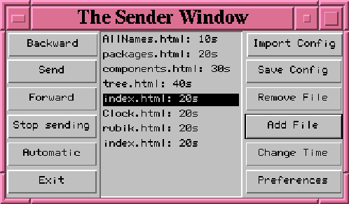
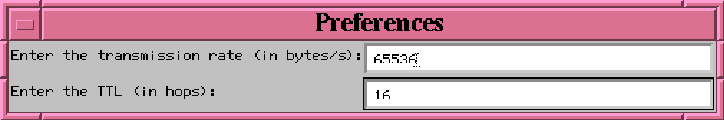

Next: 3.2 Le rcepteur
Up: 3 Fonctionnalits
Previous: 3 Fonctionnalits
Du ct metteur, l'on l'cran une fentre correspondant au panneau de commande de
l'metteur (voir figure 2).
Figure 2:
Fentre de l'metteur
 |
Dans la fentre ci-dessus, certains fichiers sont disponibles. Cependant,
au lancement de l'application, il n'y a aucun fichier et les paramtres de
la transmission sont ceux par dfaut (transmition rate = 65536 bit/s
et TTL = 16 (TTL = Time To Live, i.e., la dure de vie du paquet sur
le rseau)).
 Add File:
Add File:
- ce bouton permet de faire apparatre le nom d'un nouveau
fichier dans la liste. Au moment de l'insertion du fichier, une
bote de dialogue (voir figure 3) apparat dans laquelle on
doit saisir un temps (en secondes), temps correspondant la dure
d'affichage du transparent en mode automatique. Le fichier apparat
ensuite dans la fentre de commande avec sa dure d'affichage, et il
est dit dans Netscape.
-
Change Time:
- permet de changer la valeur de la dure d'affichage
d'un transparent (pour le mode automatique).
-
Remove File:
- c'est le bouton pendant de Add File. Il enlve le
fichier slectionn (dont le nom apparat en vido inverse) de la
fentre des fichiers disponibles.
-
Send:
- met le fichier slection et l'dite avec Netscape.
-
Stop sending:
- arrte l'mission en cours.
-
Preference:
- permet de modifier les paramtres de la transmission
(Transmission rate et TTL).
-
Save Config:
- permet d'enregistrer la configuration actuelle
(i.e., les paramtres de transmission ainsi que les fichiers disponibles).
-
ImportConfig:
- permet de remplacer la configuration
courante par une nouvelle configuration prcdemment enregistre
(fichier .cfg, en gnral).
-
Forward:
- permet la slection du fichier suivant de la liste, et
l'dition dans Netscape.
-
Backward:
- de mme, permet la slection du fichier prcedent de la
liste, et l'dite dans Netscape.
-
Automatic:
- passe en mode automatique. Dans ce mode, les fichiers
sont transmis l'un aprs l'autre, partir du fichier slectionn. Par
exemple, si un fichier possde un temps transmission de 20 secondes, on
dmarre un compteur au dbut de la transmission du fichier: si la
transmission se termine avant les 20 secondes, on attend la fin des 20
secondes pour passer au fichier suivant; sinon on interrompt la
transmission (ce qui ne signifie pas forcment que le fichier n'a pas
t correctement reçu) et on passe au fichier suivant. Si auncun
fichier n'est slectionn, on dmarre par le premier fichier de la liste.
-
Exit:
- sort du programme.
Remarques:
- dans la fentre ne sont affichs que les noms relatifs
des fichiers afin d'obtenir une meilleure lisibilit. Toutefois, c'est
le nom complet du fichier (avec son chemin d'accs) qui est connu du
programme.
- pour visualiser un fichier avec Netscape, il suffit de
double-cliquer sur son nom.
- les configurations sont enregistres dans des fichiers de type texte,
d'extension .cfg. Ces fichiers sont simples, ce qui permet
l'utilisateur de les raliser ventuellement lui-mme la main.
Figure 3:
Bote de dialogue
 |
Next: 3.2 Le rcepteur
Up: 3 Fonctionnalits
Previous: 3 Fonctionnalits
Denis Arnaud
12/19/1997